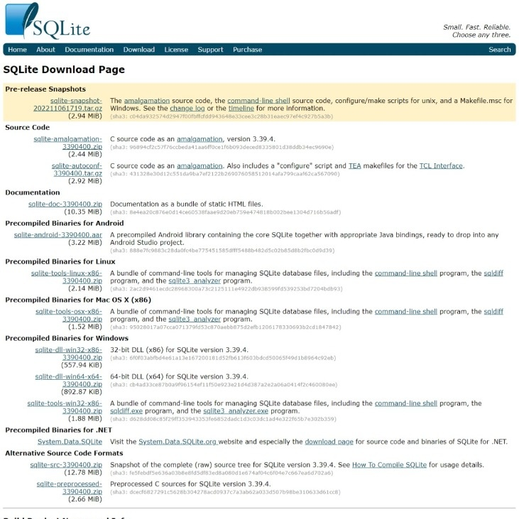

Download

Pengunduhan SQLite dapat dilakukan pada halaman pengunduhan resminya. Terdapat banyak pilihan pengunduhan seperti pengunduhan Source Code-nya atau pilihan distribusi untuk Android, Linux, Mac OS X (x86) dan Windows.
Ke Halaman Download